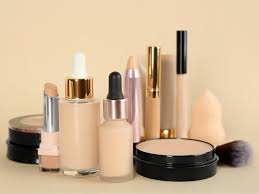

A preparação da pele é uma etapa fundamental na maquiagem, pois influencia diretamente no acabamento, na durabilidade e na aparência natural do resultado final. Tudo começa com a limpeza, utilizando um sabonete facial adequado ao seu tipo de pele para remover impurezas, oleosidade e resíduos. Em seguida, é essencial aplicar um hidratante, mesmo em peles oleosas, pois ele ajuda a equilibrar a pele e a evitar o ressecamento causado por alguns produtos de maquiagem. Durante o dia, o uso do protetor solar é indispensável, protegendo a pele dos danos solares. Depois disso, muitas pessoas optam pelo uso do primer, que ajuda a suavizar os poros, controlar a oleosidade e aumentar a fixação da maquiagem. Há primers com diferentes funções, como efeito matte, iluminador ou disfarce óptico. Se necessário, é possível aplicar corretivos coloridos antes da base para neutralizar manchas específicas por exemplo, corretivo verde para vermelhidões, salmão para olheiras arroxeadas e amarelo para olheiras escuras. Com a pele pronta, entra em cena a aplicação da base, escolhida conforme o tom e tipo de pele, seguida do corretivo, usado pontualmente para iluminar ou cobrir áreas específicas. Por fim, uma bruma facial pode ser usada entre as etapas ou ao final da maquiagem para garantir mais viço, hidratação e fixação. Com esses cuidados, a maquiagem se torna mais uniforme, bonita e resistente ao longo do dia.
